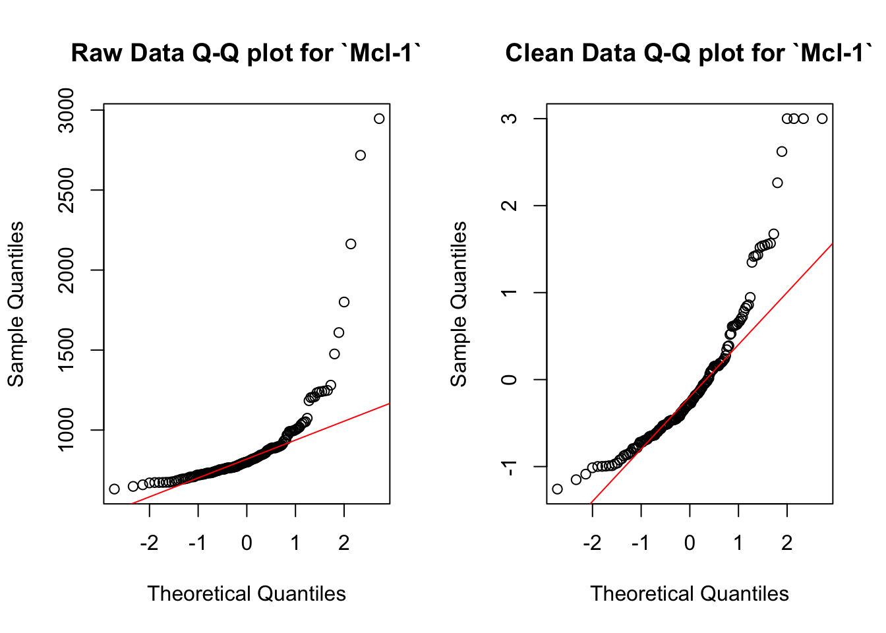
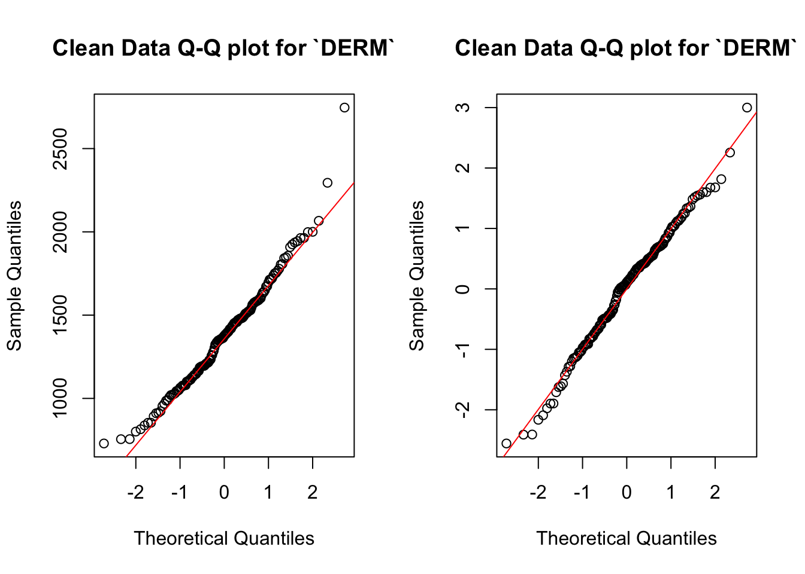

Biomarkers of ASD
Abstract
This study uses data from Hewitson et al. (2021), which includes 154 male pediatric subjects classified into ASD (autism spectrum disorder) and TD (typically developing) groups. Following log transformation and trimmed outliers, we split the dataset into training and testing sets. Instead of using random forest, t-tests, and logistic regression to select proteins like the original article, we explored three different methodologies to see which models would fare better than the original. We first split the dataset into a training and testing dataset and applied the three tests only on the training data to identify the proteins and fitted them into a logistic regression model. This model improved in sensitivity, specificity, and accuracy, but had a worse ROC AUC score. Our next method was altering the number of potential proteins from top 10 to top 20 and following the same steps as the in-class model. The model that has 20 predictive proteins returned a better ROC AUC (area under the curve) value and improved accuracy and specificity, but poorer sensitivity. In addition, we explored a fuzzy intersection, which took proteins that were identified by one of the testing methods instead of both and used those as predictors in the model. This model had significantly poorer performance than the original, with it only improving the specificity value.s Lastly, we tried a 15-protein panel and achieved improved classification accuracy.
Dataset
The data provided in Hewitson et al. (2021) were initially collected in 2017 consists of 154 male pediatric subjects (mostly White/Caucasian and Hispanic/Latino, over 80% of the sample size). All participants were classified into two groups: ASD (autism spectrum disorder) and TD (typically developing). The ASD group was comprised of 76 subjects with a mean age of 5.6 years (SD 1.7 years); The TD group was comprised of 78 subjects with a mean age of 5.7 years (SD 2.0 years). 1317 protein were measured for each sample, 192 of them were failed in the quality control, so 1125 proteins were analyzed. In addition to quality control, the data was normalized by taking log transformation and trimming out the outlier by z-transformation.
Summary of published analysis
To find the protein for ASD prediction, the paper uses three different methods: random forest(RF), t-test, and correlation-based methods.
Specifically, they use three methods to select the top ten predictive protein from each method, find their intersection : DERM, suPAR, MAPK14, EPHB2, and IgD
Taking those as the core proteins, a predictive model is trained with them. They further investigate the 13 proteins left in whether they provided additive predictive power. Along with these models, a logistic regression model is implemented to investigate the accuracy. It was discovered that four additional proteins provided additive predictive power, so a total of 9 proteins resulted in an AUC of 86% with a sensitivity of 83% and specificity of 84%.
Findings
Impact of preprocessing and outliers
Task 1


We compare the data before processing and after processing. Specifically, we compare the raw data set and data after log-transformation and scaling. We randomly selected two sample protein types and examine the normality. It could be seen that DERM is normally distributed before pre-processing but not centered at 0, while Mcl-1 is neither normally distributed nor centralized. Therefore, we could conclude that not all protein types are normally distributed in the raw data, so a log-transformation is used. By using this method, the data used for further model training could be more reliable.
Task 2
To do some exploratory analysis of outlying values. First, we counted the number of outliers (Z-scores > 3) standard deviation from the mean) per subject.
Most subjects have 0 to 3 outliers, but we are more interested in subjects with more than 4 outliers.
# A tibble: 34 × 3
group Column Outlier_Count
<chr> <chr> <int>
1 ASD SIG14 5
2 ASD Ephrin-A3 4
3 ASD Annexin V 4
4 ASD C1q 4
5 ASD IL-17F 4
6 ASD CDK5/p35 4
7 ASD TLR2 4
8 ASD Phosphoglycerate mutase 1 4
9 ASD NUDC3 4
10 ASD TGM3 4
# ℹ 24 more rows# A tibble: 2 × 2
group n
<chr> <int>
1 ASD 16
2 TD 18We found that the ASD group has 16 subjects with outliers greater than 4, with a maximum of 5 outliers per subject. The TD group has 18 subjects with outliers greater than 4, with a maximum of 4 outliers per subject.
# A tibble: 2 × 2
# Rowwise:
group Total_Outliers
<chr> <int>
1 ASD 1016
2 TD 1312We also calculated the total number of outliers within each group and found that there are more outliers in the TD group than in the ASD group.
Methodological variations
Original Methodology (from inclass-analysis.R):
# A tibble: 4 × 3
.metric .estimator .estimate
<chr> <chr> <dbl>
1 sensitivity binary 0.812
2 specificity binary 0.733
3 accuracy binary 0.774
4 roc_auc binary 0.883Task 3 (Data split before variable selection)
# A tibble: 4 × 3
.metric .estimator .estimate
<chr> <chr> <dbl>
1 sensitivity binary 0.875
2 specificity binary 0.75
3 accuracy binary 0.812
4 roc_auc binary 0.820Comparing the split model to the original in class analysis, we can see that sensitivity of the model increased from 0.812 to 0.875, meaning that the model became better at detecting true positives, or ASD cases. The specificity of the model also increased slightly from 0.733 to 0.75, meaning that the model also became slightly better at identifying true negatives, or TD cases. The accuracy of the model also improved from 0.774 to 0.812, which suggests that splitting the model into training and testing data does in fact perform better in predicting both classes correctly. However, the ROC AUC score dropped from 0.883 to 0.820, which indicates that the model’s ability to distinguish between positive and negative thresholds has decreased. The high ROC AUC score from the initial model can be attributed to overfitting, as the model could have recognized patterns specific to the test set because the same data was used to train and test. This means that the model where the data was trained on a separate set of data is better, as it trades off class separation capability for improved generalization.
Task 3 (larger panel of proteins)
# A tibble: 4 × 3
.metric .estimator .estimate
<chr> <chr> <dbl>
1 sensitivity binary 0.75
2 specificity binary 0.867
3 accuracy binary 0.806
4 roc_auc binary 0.892The model with 20 proteins performs a lot differently than the original model with 10 proteins from the in class analysis. First, the sensitivity decreased from 0.812 to 0.75, which means the new model’s ability to correctly identify cases of ASD has decreased. However, the specificity increased from 0.733 to 0.867, which means that the model performs better in identifying non-ASD cases. The model’s accuracy also improved from 0.774 to 0.806, which means that the new model correctly classifies more cases in total. Lastly, the ROC AUC score also improved slightly, from 0.883 to 0.892, which means that the model is able to separate positive and negative cases better. By adding 20 proteins instead of 10, the model can better identify negative cases and distinguish between negative and positive cases better. However, the addition of these new features diluted the predictors for positive ASD cases, decreasing the sensitivity.
Task 3 (Fuzzy Intersection)
# A tibble: 4 × 3
.metric .estimator .estimate
<chr> <chr> <dbl>
1 sensitivity binary 0.562
2 specificity binary 0.8
3 accuracy binary 0.677
4 roc_auc binary 0.783For the model using fuzzy intersection, we decided to create a fuzzy score threshold that the protein had to meet in order to be included in the model. The score represents how many panels the protein is included in. In the original model, the protein had to be included in both the random forest panel and the multiple testing panel to be included, but for the model using fuzzy intersection, the protein only has to be included in one of the panels to be included in the model, which is represented by a fuzzy score threshold of 1. This model performed significantly worse than the original in-class model. The sensitivity decreased from 0.812 to 0.562, which is a significant decrease in the model’s ability to classify true positives, or ASD cases, correctly. On the other hand, the specificity increased from 0.733 to 0.80, which means that this model is better at classifying true negatives, or TD cases, better than the original model. However, the model’s accuracy from 0.774 to 0.677, meaning that it classified less cases correctly than the original model. Lastly, the ROC AUC score of the fuzzy intersection model decreased as well, from 0.883 to 0.783, showing that the new model’s overall ability to distinguish between positive or negative cases decreased. It makes sense that the fuzzy intersection model performs more poorly than the original model. Fuzzy intersection allows proteins that are only selected by one of the methods to be included in the final model, which might include predictors that are not as relevant or add features that do not correlate with the target variable, in this case ASD or TD cases.
Improved classifier
Task 4 (Improved panel of proteins)
# A tibble: 4 × 3
.metric .estimator .estimate
<chr> <chr> <dbl>
1 sensitivity binary 0.938
2 specificity binary 0.8
3 accuracy binary 0.871
4 roc_auc binary 0.896Instead of choosing 20 predictive proteins in each method, we choose to select top 15 predictive proteins in each method, taking the hard intersection, then explore the accuracy. Comparing between improved panel model and previous ones (larger panel model and fuzzy intersection model), it could be seen that the sensitivity has improved to 0.938. This means that the model could better detect the positive cases. Specifically, 93.8% children were correctly identified with ASD. Additionally, the specificity increased from 0.733 to 0.8, indicating that the improved the model is more effective in detecting the TD group children than the previous model. The accuracy of the improved model had increased to 0.871, meaning that the model of correctly identified the children 87.1% of time.
Overall, the model is improved with an alternative panel. Specifically, we reduced the protein selections from 20 predictive proteins to 15 predictive proteins. The latter model has been improved its ability in detecting ASD group while the ability in detecting the TD has not been compromised.
The reducing in selecting protein could potentially exclude less informative protein and exclude nosier protein, which produce a better prediction. Moreover, intersection of 15 proteins is more refined, where the protein could possibly stronger correlated to target (ASD/TD group). Furthermore, a smaller protein panel could prevent the model from overfitting, which may generalized better in test data.
However, it could be seen that, though accuracy has increased, the AUC has not increased much, which indicate that the overall discriminative power does not improve a lot. Therefore, further optimization strategies could apply to further improve the model in order to improve this.